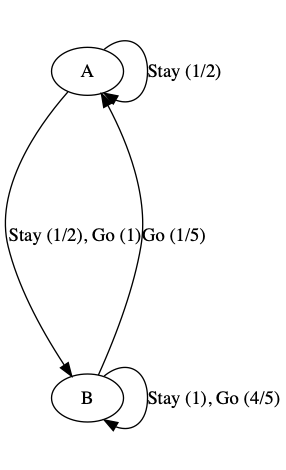

$$ \newcommand{\p}{^\prime} \newcommand{\t}[1]{\text{#1}} $$
Note. This graph is missing probabilities.
Looking for utility:
$$ \begin{aligned} U^\pi(q) &= R_0(q) + \gamma \sum_{q\p \in Q} U^\pi (q\p) P(q\p \mid q, \pi(q)) \\ U(q) &= R_0(q) + \gamma \max_\sigma \sum_{q\p \in Q} U(q\p) P(q\p \mid q, \sigma) \end{aligned} $$
So, for some examples:
$$ U(A19) = 0 + 1 \cdot \max \\ \left\{ U(S19) P(S19 \mid A19, \t{Stay}), \\ U(\t{Bust}) P(\t{Bust} \mid A19, \t{Hit}) + U(A20) P(A20 \mid A19, \t{Hit}) + U(A21) P(A21 \mid A19, \t{Hit}) \right\} $$
Note that
$$ \begin{aligned} U(S20) &= R_0(S20) \\ U(S21) &= R_0(S21) \\ U(\t{Bust}) &= R_0(\t{Bust}) \\ \end{aligned} $$
This seems like a system of equations that should be easy to solve, but, since max is not linear we can't just do that. Value iteration is a numerical method for solving this kind of system.
Consider the following toy situation
$$ \begin{aligned} U(A) &= R_0(A) + \gamma \max(\{ U(B), U(A) P(A \mid A, \t{Stay}) + U(B) P(B \mid A, \t{Stay}) \}) \\ U(B) &= R_0(B) + \gamma \max(\{ U(B), U(A) P(A \mid B, \t{Go}) + U(B) P(B \mid B, \t{Go}) \}) \end{aligned} $$
Let \(\gamma = 1/2\).
Then, for the algorithm:
$$ \begin{array}{ll} U_0^A \leftarrow \t{ guess for } U(A) & \\ U_0^B \leftarrow \t{ guess for } U(B) & \\ \t{for } i = 1 \t{ to } \infty: & \\ & \t{let } U_i^A = 1 + \gamma \max \{ U_{i-1}^B, (1/2) U_{i-1}^A + (1/2) U_{i-1}^B \} \\ \t{for } i = 1 \t{ to } \infty: & \\ & \t{let } U_i^B = 1 + \gamma \max \{ U_{i-1}^B, (1/5) U_{i-1}^A + (4/5) U_{i-1}^B \} \end{array} $$
This is an example of dynamic programming.
Goal:
$$ \t{dist}\left( \binom{U_{i+1}^A}{U_{i+1}^B}, \binom{U^A}{U_B} \right) \leq K \cdot \t{dist}\left( \binom{U_{i}^A}{U_{i}^B}, \binom{U^A}{U_B} \right) \\ \forall 0 \leq k < 1 $$
and
$$ \begin{aligned} \lim_{i \rightarrow \infty} \t{dist} \left( \binom{U_{i}^A}{U_{i}^B}, \binom{U^A}{U_B} \right) &\leq \lim_{i \rightarrow \infty} K^i \t{dist} \left( \binom{U_{0}^A}{U_{0}^B}, \binom{U^A}{U_B} \right) \\ &= \lim_{i \rightarrow \infty} K^i \\ &= 0 \end{aligned} $$